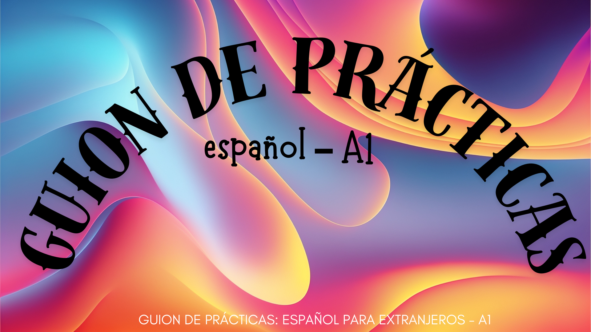
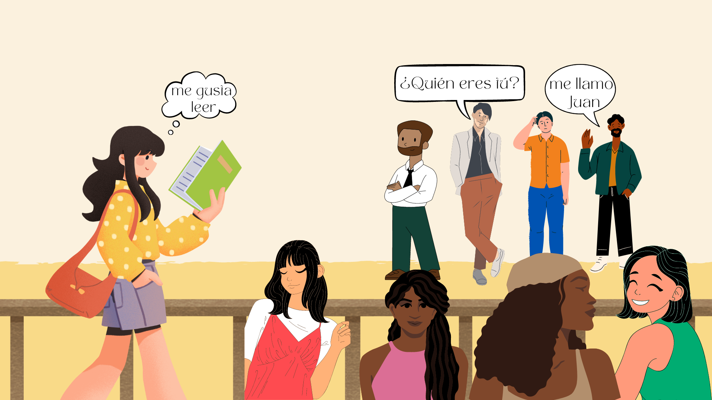

Ejercicios finales
22 de mayo de 2024

Tras la realización de este curso, habrás obtenido los conocimientos y las herramientas necesarias para presentarte de manera efectiva en español. Ahora, se te van a proponer varias actividades para poner a prueba tus habilidades y creatividad. Una vez finalizadas y entregadas, recibirás una insignia de reconocimiento por tu participación en este curso.
Se deberán realizar las siguientes tareas antes del 15 de julio. Cada una de ellas representa el porcentaje de trabajo individual del curso. Se necesitan superar todas para aprobar el curso. Debes entregarlas en la tarea abierta dentro del apartado de “Actividades”, en una carpeta comprimida con el nombre de: ApellidosNombre - EspañolA1. Por ejemplo: BonfimAlvarengaMaria - EspañolA1.
Lista de tareas:
Graba un vídeo presentándote en español. En este vídeo, debes incluir la siguiente información:

Hola, me llamo María. Mi apellido es Bonfim Alvarenga. Soy de Brasil. Soy brasileña. Tengo 24 años. Soy profesora y trabajo en un instituto llamado “Instituto Cervantes”. Estoy soltera. Hablo español, inglés y portugués. Me gusta caminar en la playa todos los días.Observa los siguientes ejemplos con atención, son ejemplos de presentación válidas en los que podrás inspirarte.
Ejemplo de presentación: vídeo
Ejemplo de presentación: audio
El vídeo no debe durar más de 2 minutos. Asegúrate de hablar claramente y de que la calidad del audio y del video sea buena. Este video será una demostración de tu capacidad para presentarte en español.
Crea una presentación de 5 diapositivas sobre lo que hablarás en tu vídeo de presentación personal. Acuérdate de incluir los siguientes puntos:
Puedes incluir cómo te sientes el día de tu presentación.
Motivo: ¿Estás nervioso por presentarte y grabarte?
La presentación debe ser visualmente atractiva y clara. Utiliza imágenes y tablas para hacerla más comprensible. Cada diapositiva debe tener un pie de página con tu nombre completo y el título del curso.
Escribe una reflexión de no más de 1 página sobre tu experiencia en este curso. Incluye los siguientes puntos:
Para cualquier duda o preguntas, escribidme al correo: mbonfim@ucm.com.
Dispones de varios materiales en DonQuijote o en PROFEdeELE.